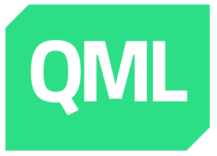
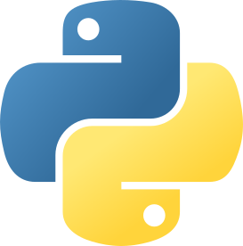
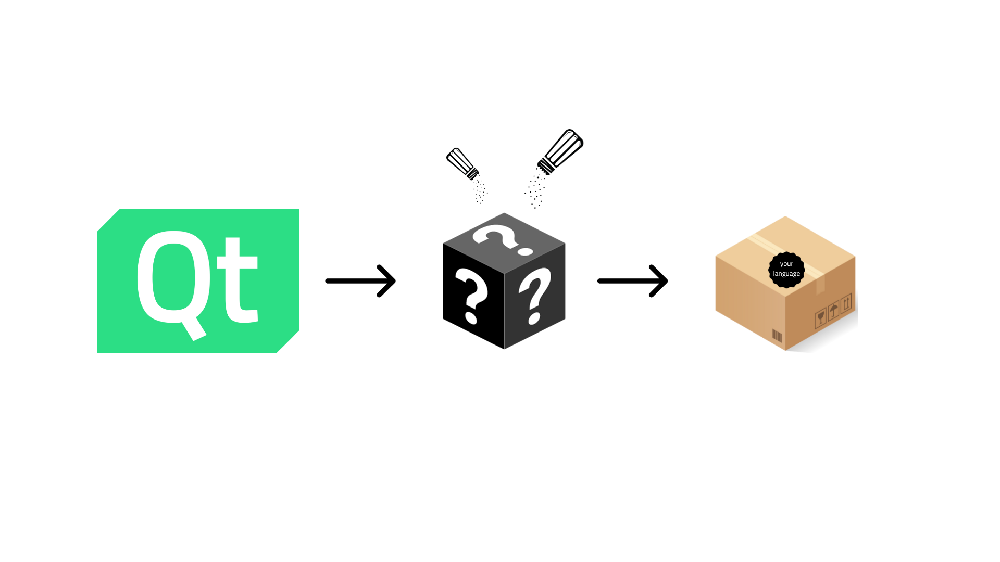
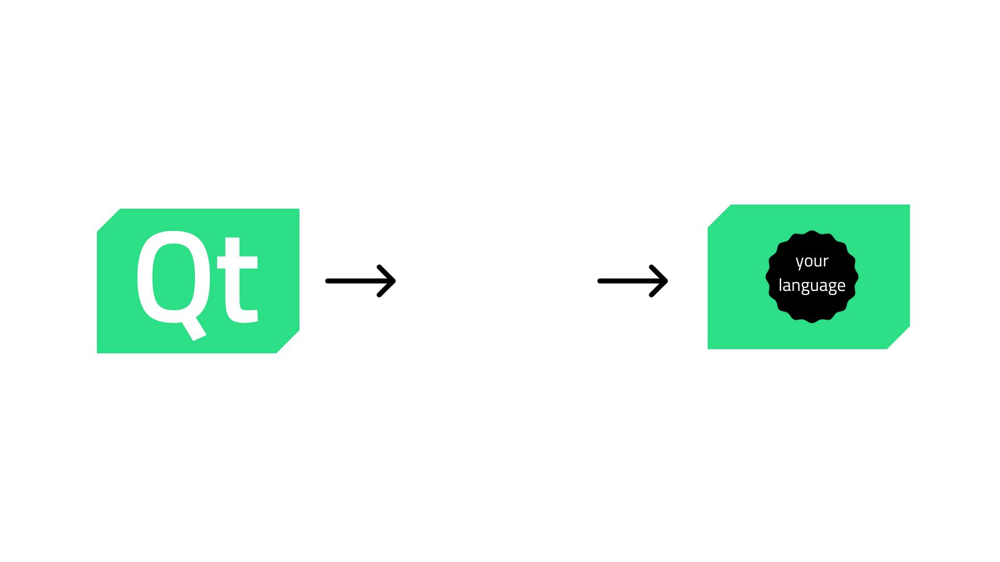
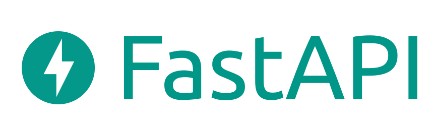
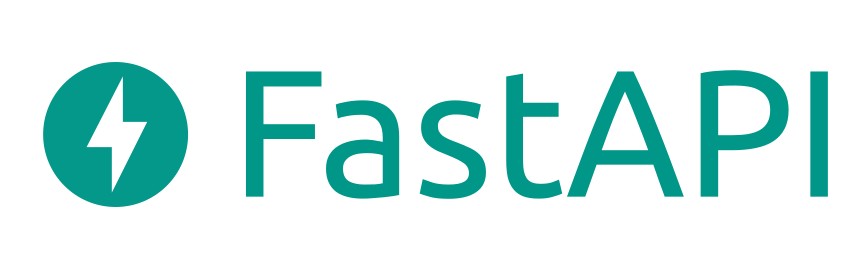
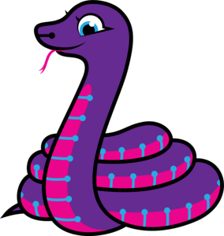

The Role of new Languages in the Future of the Qt Ecosystem.
Dr. Cristián Maureira-Fredes
@cmaureir


Disclaimer
This talk has lots of opinions and points of view that belong to me, not to my employer nor my affiliations.Motivation
What is the best
programming language?

Source TIOBE index October 2023

Most Popular technologies - Source StackOverflow Survey 2023

Admired and Desired Programming languages - Source StackOverflow Survey 2023
What about
UI frameworks?

Most popular Frameworks - Source StackOverflow Survey 2023

Admired and Desired Frameworks - Source StackOverflow Survey 2023
Source Tauri Intro
The current language state
of the Qt Project
Languages in Qt


What about other
languages?
| Name | Language | Latest version | Last commit | License | Company |
|---|---|---|---|---|---|
| PySide | Python | 6.6.0 | - | LGPLv3/Commercial | The Qt Company |
| PyQt | Python | 6.6.0 | - | GPLv3/Commercial | Riverbank Computing |
| CXX-Qt | Rust | 6.x* | - | MIT/Apache 2.0 | KDAB |
| qmetaobject-rs | Rust | 6.5.0 | 2023.11.03 | MIT | Woboq |
| QtJambi | Java/Kotlin | 6.6.0 | 2023.10.17 | LGPLv2 | Omix Visualization |
| QML.jl | Julia | 6.5.2 | 2023.10.16 | MIT | JuliaGraphs |
| RingQt | Ring | 5.15.15 | 2023.09.27 | MIT | - |
| NodeGui | Node.js | 6.4.1 | 2023.08.28 | MIT | NodeGui |
| nimqt | Nim | 6.4.3 | 2023.08.22 | GPL2 | - |
| QML-zig | Zig | 5.15 | 2023.08.17 | Apache 2.0 | - |
(updated on Nov 6th, 2023)
Other 26 projects (some inactive) in wiki.qt.io/Language_Bindings
Snapshot from https://youtu.be/kiw4fQH9vb8
Keynote: Building the Future of Qt, Together
Volker Hilsheimer
(Akademy 2022)
What is the motivation?
- The need of GUI frameworks
- C++ flexibility for bindings
- Language showcase
- Qt's popularity ⭐
How is it done? (1/2)
How is it done? (2/2)
What other languages
bring to the table
Python's syntax
#ifndef MAINWINDOW_H
#define MAINWINDOW_H
#include <QMainWindow>
#include <QPushButton>
class MainWindow : public QMainWindow
{
Q_OBJECT
public:
MainWindow(QWidget *parent = nullptr);
private slots:
void handleButton();
private:
QPushButton *m_button;
};
#endif // MAINWINDOW_H
#include "mainwindow.h"
MainWindow::MainWindow(QWidget *parent)
: QMainWindow(parent)
{
m_button = new QPushButton("My Button", this);
connect(m_button, SIGNAL(clicked()), this, SLOT(handleButton()));
}
void MainWindow::handleButton()
{
m_button->setText("Ready");
}
#include
#include "mainwindow.h"
int main(int argc, char *argv[])
{
QApplication app(argc, argv);
MainWindow mainWindow;
mainWindow.show();
return app.exec(d);
}
import sys
from PySide6.QtCore import Slot
from PySide6.QtWidgets import QApplication, QMainWindow, QPushButton
class MainWindow(QMainWindow):
def __init__(self, parent=None):
QMainWindow.__init__(self, parent)
self.button = QPushButton("My Button", self)
self.button.clicked.connect(self.handle_button)
@Slot()
def handle_button(self):
self.button.setText("Ready")
if __name__ == "__main__":
app = QApplication(sys.argv)
mainWindow = MainWindow()
mainWindow.show()
sys.exit(app.exec())Python's heterogeneity
 

Science


Python: package distribution
qtpip
More Qt for Python
- Wiki page pyside.org
- üìö Official docs doc.qt.io/qtforpython
- ü§ù Community at wiki.qt.io/Qt_for_Python#Community
- üì∫ Talks at doc.qt.io/qtforpython-6/videos.html
Rust
- Performance
- Fast and memory efficient (no runtime or GC).
- Reliability
- Rich type system and ownership model (mem and thread safety)
- Productivity
- Docs, friendly compiler, package manager and build tool.
fn main() {
println!("Hello, world!");
}
$ rustc main.rs
$ ./main
Hello, world!
Rust and C++ (1/2)
#include <iostream>
using namespace std;
int main() {
int nums[] = {1,2,3,4,5,6};
int five = nums[1] + nums[2];
cout << "Result: " << five";
}
fn main() {
let arr: [i32; 5] = [1, 2, 3, 4, 5];
let five = arr[1] + arr[2];
println!("Result: {}", five);
}
Rust and with C++ (2/2)
class Person {
public:
Person(string n, int a);
void talk();
string name;
int age;
};
Person::Person(string n, int a){
name = n;
age = a;
}
void Person::talk(){
cout << name << " says Hello!\n";
}
int main() {
Person maria("Maria", 22);
maria.talk();
}
// declare a struct
struct Person {
name: String,
age: i32
}
impl Person {
fn speak(&self){
println!("{} says Hello!",
self.name);
}
}
fn main() {
let maria = Person{
name: String::from("Maria"),
age: 5
};
maria.speak();
}

CXX-Qt Rust ⇄ C++ bindings
#[cxx_qt::bridge]
pub mod qobject {
unsafe extern "C++" {
include!("cxx-qt-lib/qstring.h");
type QString = cxx_qt_lib::QString;
}
unsafe extern "RustQt" {
#[qobject]
#[qml_element]
#[qproperty(i32, number)]
#[qproperty(QString, string)]
type MyObject = super::MyObjectRust;
}
unsafe extern "RustQt" {
#[qinvokable]
fn increment_number(self: Pin<&mut MyObject>);
#[qinvokable]
fn say_hi(self: &MyObject,
string: &QString,
number: i32);
}
}
Snippet from: github.com/KDAB/cxx-qt/tree/main/examples/qml_minimal
- CXX - safe FFI between Rust and C++
- Idiomatic C++ and Rust
- Macros → Bindings
- Rust threads → update Qt state
- Partial support
Rust - Highlights
- Memory management (Ownership & Borrowing)
- Tooling (
cargo) - Growing ecosystem
- Still evolving
Rust Features that I Want in C++ - David Sankel - CppNow 2022
Zig
- No hidden control flow, nor memory alloc
- No preprocessor, no macros
- Metaprogramming: compile-time code execution and lazy evaluation (
comptime)
// main.zig
const std = @import("std");
pub fn main() !void {
const stdout = std.io.getStdOut().writer();
try stdout.print("Hello, {s}!\n", .{"world"});
}
$ zig build-exe main.zig
$ ./hello
Hello, world!
Zig and C++
#include <iostream>
using namespace std;
class Rectangle {
public:
float x;
float y;
Rectangle(float x, float y) :
x(x), y(y) {}
float area() {
return x * y;
}
};
int main(int argc, char *argv[]) {
Rectangle r = Rectangle(2.2, 3.3);
cout << "Rectangle area: "
<< r.area();
return 0;
}
const std = @import("std");
const Rectangle = struct {
x: f32,
y: f32,
pub fn init(x: f32, y: f32) Rectangle {
return Rectangle{
.x = x, .y = y,
};
}
pub fn area(self: Rectangle) f32 {
return self.x * self.y;
}
};
pub fn main() !void {
const r = Rectangle.init(2.2, 3.3);
const stdout = std.io.getStdOut().writer();
try stdout.print("Rectangle area: {}\n",
.{r.area()});
}
Zig - Highlights
- Faster and safer than C (*)
- Integration with C-libraries without FFI/bindings
- Built-in testing framework
comptimekeyword- Out of the box cross compilation
Intro to the Zig Programming Language • Andrew Kelley • GOTO 2022
Carbon
- In development
- Succesor approach
- Interoperability (C++ ⇄ Carbon)
- Modern Generic system
- Safety strategy (Migration plan)
package hello api;
fn Main() -> i32 {
var s: auto = "Hello, world!";
Print(s);
return 0;
}
$ ./explorer hello.carbon
Hello, world!
Carbon and C++
// C++
#include <math.h>
#include <iostream>
#include <span>
#include <vector>
struct Circle {
float r;
}
void PrintTotalArea(std::span circles) {
float area = 0;
for (const Circle& c: circles) {
area += M_PI * c.r * c.r;
}
std::cout << "Total area: " << area << "\n";
}
auto main(int argc, char** argv) -> int {
std::vector circles = {{1.0}, {2.0}};
// Implicitly converts `vector` to `span`
PrintTotalArea(circles);
return 0;
}
// Carbon
package Geometry api;
import Math;
class Circle {
var r: f32;
}
fn PrintTotalArea(circles: Slice(Circle)) {
var area: f32 = 0;
for (c: Circle in circles) {
area += Math.Pi * c.r * c.r;
}
Print("Total area: {0}", area);
}
fn Main() -> i32 {
// A dynamically sized array, like `std::vector`.
var circles: Array(Circle) = ({.r = 1.0}, {.r = 2.0});
// Implicitly converts `Array` to `Slice`
PrintTotalArea(circles);
return 0;
}
Carbon - Highlights
- Simpler syntax
- Safer/modern C++ succesor
- Safety: only way to radically change the std library
- Still experimental
Carbon Language Successor Strategy: From C++ Interop to Memory Safety - Chandler Carruth - CppNow 23
Many other languages to check
- cppfront - github.com/hsutter/cppfront
- Circle - circle-lang.org
- Nim - nim-lang.org
- Crystal - crystal-lang.org
- ...and many more!
How should Qt
look like in the future
Imagine a framework
- ✅ Memory safe
- ✅ Easy to test
- ✅ Straightforward syntax
- ✅ Modern Generics
- ✅ Backward compatible
ü§Ø
What can we (*) do?
(*) Qt Project members
Languages
Be aware of other languages, no need to be an expert.
API Design
Keep in mind other languages when new API is being written down (or updated).
Documentation
Try to add a general explanation of the method/class/module then a more language specific one.
Tooling
Get inspired by what's out there. Innovation is not always necessary.
Outreach
Spreading the knowledge should be priority 1, and making everything accesible priority 2.
What does it mean to have more languages in Qt?
More languages means
more communities
More languages means
more experience
More languages means
a better Qt
Let's bring Qt
everywhere
Q&A
The Role of new Languages in the Future of the Qt Ecosystem.
Dr. Cristián Maureira-Fredes
@cmaureir